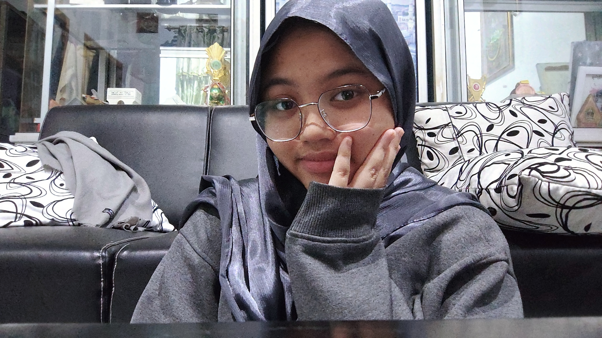
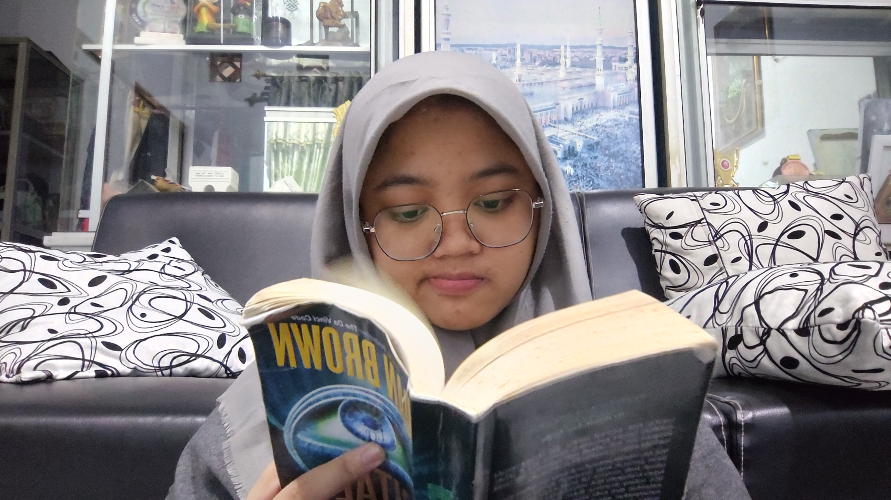
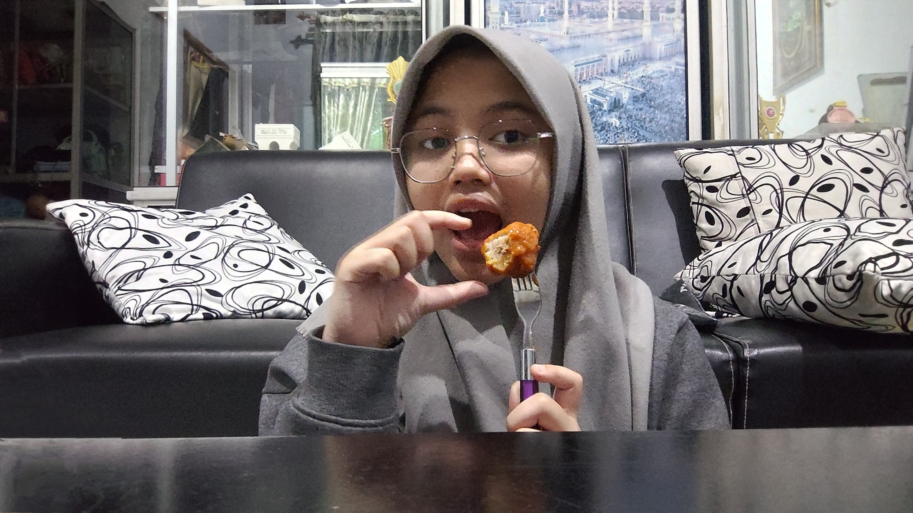
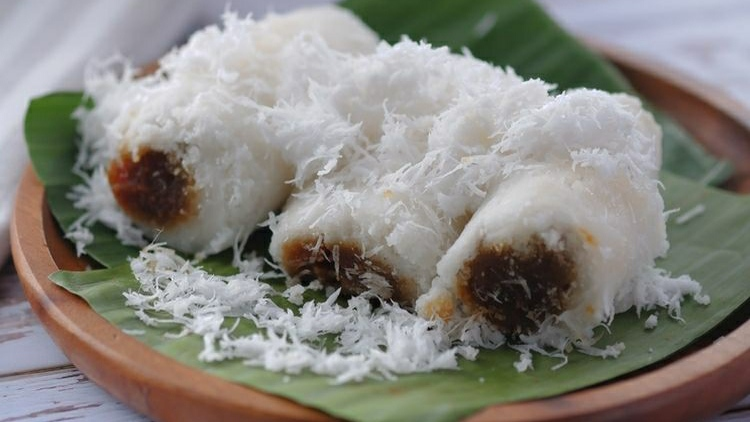
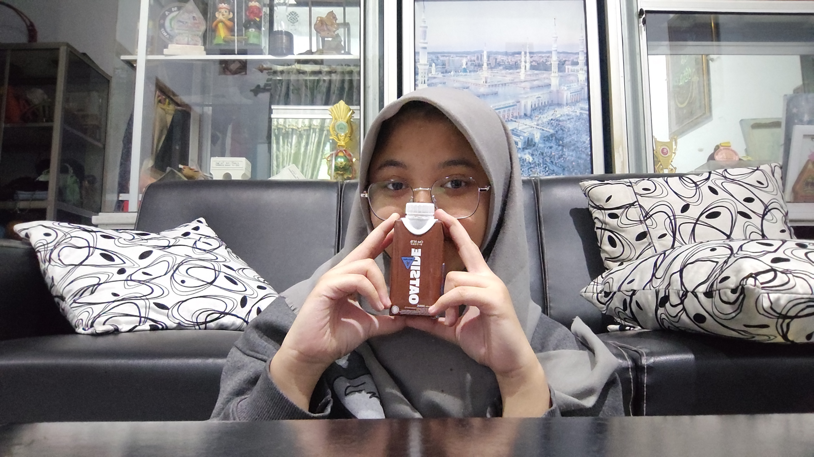
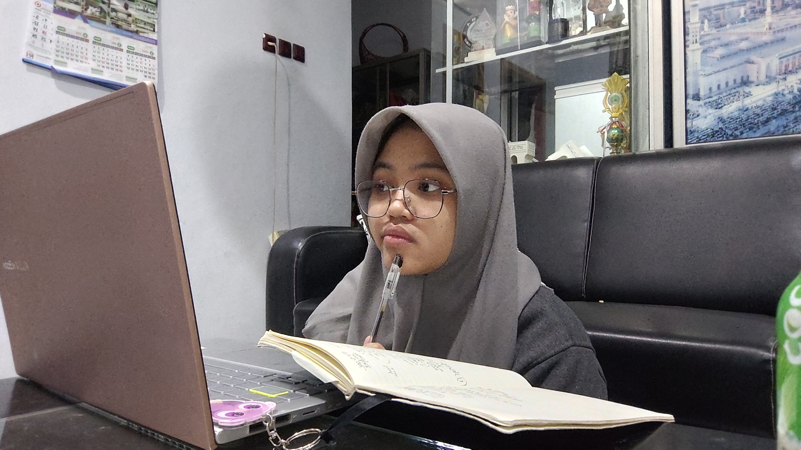
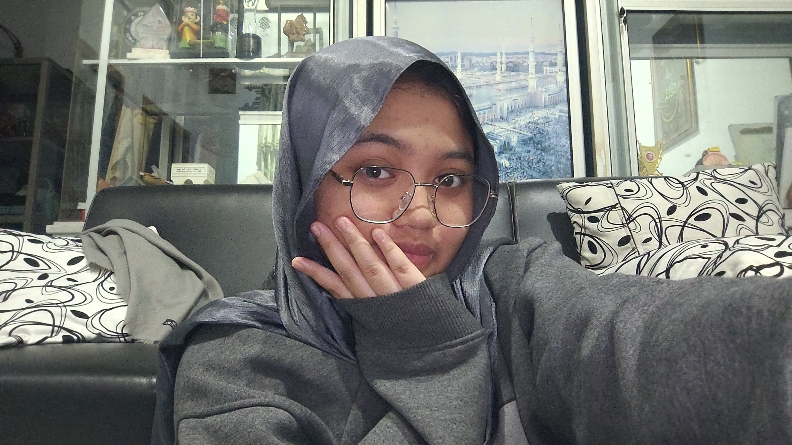

Tentang Ara
Btw, gimana nih fotonya? Cantik, manis, lucu gak si? Sebelumnya kenalin ya. Fika Arka Nuriyah namanya, lahir di suatu kota yang dikenal dengan penghasil rokok (kretek) terbesar di Jawa tengah dan juga dikenal sebagai kota santri, tepatnya di Kabupaten Kudus, 23 September 2006. Kudus didirikan oleh Sunan Kudus, salah satu dari Wali Songo, pada abad ke-16. Sunan Kudus memainkan peran penting dalam penyebaran agama Islam di Jawa. Masjid Menara Kudus, yang didirikan oleh Sunan Kudus, merupakan salah satu ikon penting kota ini dan menunjukkan perpaduan antara arsitektur Islam dan Hindu.
Sekarang tinggal di Perumahan Megawon Indah, Jl. Kelapa Gading 1 no.22, Kudus, Jawa Tengah. Riwayat pendidikan dimulai di TK Al Amin dan SD Nawa Kartika, Selanjutnya SMP PP La Raiba Hanifida Jombang dan MAS Unggulan Amanatul Ummah Program Madrasah Bertaraf Internasional (MBI) merupakan tempat menuntut ilmu di jenjang SMP dan SMA. Saat ini, merupakan salah satu mahasiswa baru Institut Teknologi Sepuluh Nopember (ITS) dengan program studi Teknologi Informasi.
Hobby
Serius banget baca bukunya ya? Mau tau enggak nih buku apa yang dibaca? Judul bukunya tuh Digital Fortress. “Digital Fortress” adalah novel yang ditulis oleh Dan Brown, yang menggabungkan unsur teka-teki, teknologi, dan intrik. Cerita ini berfokus pada bidang kriptografi dan berlangsung di National Security Agency (NSA) di Amerika Serikat.
Alur Cerita
Ceritanya dimulai dengan insiden mengejutkan: sebuah superkomputer rahasia milik NSA yang dikenal sebagai TRANSLTR tidak dapat memecahkan sebuah kode. Kode tersebut ternyata diciptakan oleh seorang mantan kriptografer NSA bernama Ensei Tankado. Tankado mengklaim bahwa kode tersebut adalah bukti bahwa tidak ada sistem enkripsi yang tidak bisa dipecahkan, dan ia mengancam akan merilis kode tersebut ke publik kecuali NSA mengungkapkan TRANSLTR kepada dunia.
Konflik
Susan dan timnya berusaha memecahkan kode tersebut sebelum Tankado merilisnya. Namun, situasinya semakin rumit saat Tankado ditemukan tewas di Spanyol, dan cincin yang berisi kunci untuk memecahkan kode tersebut hilang.
David Becker dikirim oleh wakil direktur NSA, Trevor Strathmore, untuk menemukan cincin tersebut. Namun, ia segera menemukan dirinya dalam bahaya ketika berbagai pihak yang berkepentingan dengan kode tersebut mulai mengejarnya.
Pengungkapan
Selama penyelidikannya, Susan menemukan bahwa ada lebih dari sekedar ancaman publikasi kode. Strathmore, yang ternyata memiliki agenda tersembunyi, berencana untuk menggunakan kode tersebut sebagai alat untuk mengambil alih kontrol penuh atas NSA dengan menghapus privasi data individu demi alasan keamanan nasional.
Seiring dengan berjalannya cerita, ketegangan meningkat ketika Susan harus menghadapi pengkhianatan dari dalam organisasi, sementara David harus melarikan diri dari para pemburu yang ingin mengambil cincinnya.
Klimaks dan Penyelesain
Puncak cerita terjadi ketika Susan dan David berjuang untuk mengungkap rahasia dibalik Digital Fortress sebelum terlambat. Dengan kerja sama dan kecerdikan mereka, akhirnya mereka berhasil mengungkap rencana jahat Strathmore dan menyelamatkan keamanan data global.
Tema dan Pesan
"Digital Fortress" mengeksplorasi tema privasi versus keamanan, etika dalam pengawasan, serta loyalitas dan pengkhianatan. Novel ini juga menggambarkan bagaimana teknologi bisa menjadi pedang bermata dua, yang bisa digunakan untuk kebaikan maupun untuk kekuasaan yang korup.
Penutup
Dan Brown melalui "Digital Fortress" berhasil menggabungkan ketegangan, intrik, dan teka-teki teknologi menjadi sebuah cerita yang menegangkan dan memikat, membuat pembaca terus penasaran hingga halaman terakhir.
Itulah ringkasan alur cerita dari "Digital Fortress". Novel ini tidak hanya menawarkan hiburan, tetapi juga mengajak pembaca untuk merenungkan isu-isu penting yang relevan dengan perkembangan teknologi masa kini.
Makanan
Hai hai …Ini lagi makan pentol ya.sebenarnya makanan favorit si bukan pentol tapi kue putu. Sayangnya kue putu sekarang sudah jarang yang jual jadinya foto sama pentol dehh. Kalian juga harus tau klo yang paling ku suka tuh semua masakan Bunda tercinta. Apapun itu rasanya enak banget hehehehe….
Klo hanya makan saja pastinya semua orang tau ya. Nah sebagai masyarakat yang cinta dan bangga terhadap negeri ini, alangkah baiknya yuk kita perdalam lagi tentang pengetahuan terhadap kue putu ya.
Kue Putu
Kue Putu adalah salah satu kue tradisional Indonesia yang populer dan sering dijajakan oleh penjual keliling, khususnya di malam hari. Kue ini terbuat dari tepung beras yang diisi dengan gula aren atau gula kelapa dan dikukus dalam cetakan bambu. Kue putu memiliki tekstur yang lembut dan rasa manis yang khas dari gula aren.
Warna putih pada kue putu berasal dari tepung beras yang digunakan sebagai bahan utama. Tepung beras yang digunakan adalah tepung beras yang berkualitas baik sehingga menghasilkan kue yang bertekstur lembut dan warna yang cerah.
Proses Pembuatan
Adonan tepung beras dicampur dengan air hingga menjadi adonan yang agak basah dan berbutir. Adonan ini kemudian dimasukkan ke dalam cetakan bambu yang sudah diisi dengan gula aren di tengahnya. Setelah itu, cetakan bambu diletakkan di atas alat pengukus dan dikukus hingga matang.
Penyajian
Kue putu biasanya disajikan dengan taburan kelapa parut yang sudah dikukus dan diberi sedikit garam untuk memberikan rasa gurih yang melengkapi manisnya gula aren. Kue ini biasanya disantap selagi hangat.
Varian
Selain kue putu yang berwarna putih, ada juga varian kue putu yang menggunakan pewarna alami seperti pandan untuk memberikan warna hijau atau menggunakan pewarna lainnya untuk variasi warna yang menarik.
Minuman
Makan coklat tentunya banyak orang yang suka, tidak sedikit juga orang yang suka minum coklat. Tapi, jangan lupa ya untuk selalu minum air putih.Air putih, yang juga dikenal sebagai air minum, adalah salah satu kebutuhan dasar manusia yang esensial untuk kelangsungan hidup. Air putih adalah air yang tidak mengandung tambahan zat pewarna, perasa, atau pemanis, dan berfungsi untuk menjaga tubuh tetap terhidrasi. Apalagi minum air dingin Huuuuuuuu Segernya............
Dream
Dream JOB; Freelancer (biar nanti klo sudah berkeluarga skill tetap bisa dipake terutama work from home, keluarga aman terawat, keuangan insyaallah bisa bantu suami hehehe). nah selain itu yuk kita lihat detail seorang freelancer seperti apa.
Freelancer adalah individu yang bekerja secara independen dan tidak terikat oleh kontrak jangka panjang dengan satu perusahaan. Mereka menawarkan jasa atau keahlian mereka kepada berbagai klien atau perusahaan berdasarkan proyek atau kontrak tertentu. Berikut beberapa poin utama mengenai freelancer:
1. Jenis Pekerjaan: Freelancers bisa bekerja dalam berbagai bidang seperti penulisan, desain grafis, pengembangan web, penerjemahan, konsultasi, fotografi, dan masih banyak lagi.
2. Fleksibilitas: Mereka memiliki kebebasan untuk memilih proyek, menentukan jadwal kerja, dan menetapkan tarif mereka sendiri.
3. Kemandirian: Freelancers mengelola sendiri semua aspek pekerjaan mereka, termasuk pemasaran, negosiasi kontrak, dan pengaturan keuangan.
4. Penghasilan: Penghasilan freelancer bisa bervariasi tergantung pada jumlah proyek yang mereka kerjakan dan tarif yang mereka tetapkan.
5. Platform Kerja: Banyak freelancer menggunakan platform online seperti Upwork, Freelancer, Fiverr, dan lainnya untuk menemukan klien dan proyek.
Freelancing menawarkan banyak kebebasan dan fleksibilitas, namun juga memerlukan disiplin dan kemampuan manajemen diri yang baik untuk sukses.
Pendapatku
Mungkin ini adalah bagian tersulit di halaman ini. Tidak semuanya bisa dikatakan. Tapi sedikit demi sedikit ku coba mengeluarkan beberapa yang ada di dalam benak pikiran. Asikkk, sebenernya ini hanya intro hehehehe.
Ara? Iya ara, nama panggilan favoritku. Ara tuh orangnya bisa dibilang aneh. Gak aneh gimana coba, orang sering liat hal-hal gak biasa. Gak hanya itu, katanya si orangnya introvert,tapi itu gak berlaku buat orang-orang dekatnya deh. Klo udah deket sama dia tuhh pasti kamu gak percaya klo dia itu introvert. Ya mau percaya gimana, klo udah deket sama dia kelakuannya kayak kucing garong awkwkwkw….
Ndut? Comeng? Lutu? Nah iya itu ara. Ara tuh orangnya juga ngambekan. Ya biasa kayak cewek pada umumnya. Tapi ada yang bikin beda loh. Ara tuh klo lagi ngambek bawaannya minta dimanja mulu hehehehe. Intinya tuh kita harus mengerti. Ya begitulah:V. Ara orangnya juga sering nangis. Apalagi klo dia lagi capek, lagi berusaha dan berjuang buat ngedapetin sesuatu yang dia mau. Nangisnya bukan karena dia tidak bisa kok. Tapi karena dia lelah dan butuh sandaran aja. Yang uniknya tuh, klo ara lagi nangis lucu wajahnya keliatan banget hehehe:).
Aku bersyukur banget bisa kenal sama ara. Aku juga belajar banyak dari ara. Yang paling ku suka tuh, ara orangnya gak gengsian terus setia juga sama sering cerita hehehe;). Mungkin ini aja yang bisa kusampaikan. Sebenernya masih banyak lagi yang belum bisa kudeskripsikan satu-satu hehehehe.
Terima kasih atas perhatiannya.